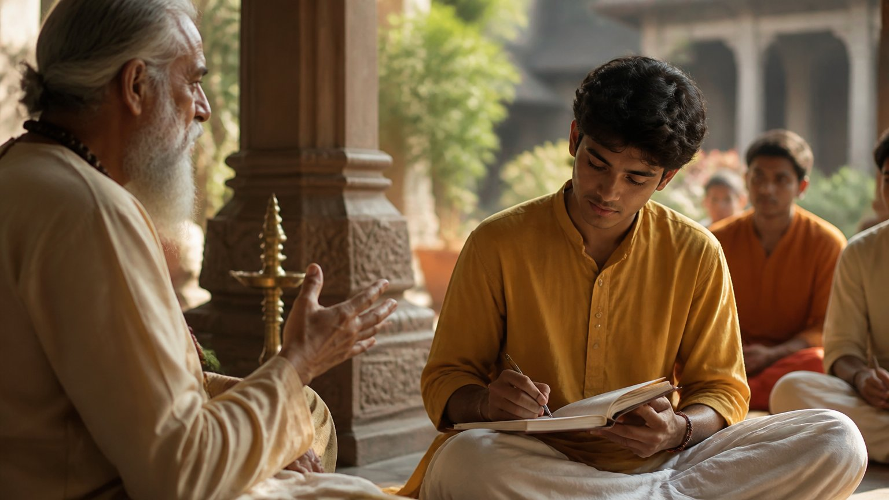

हम प्रवचन सुनते हैं, नोट्स बनाते हैं, शास्त्र पढ़ते हैं। पर क्या उनमें से कुछ भी हमारे जीवन में उतरता है? आचार्य उपेंद्र जी इस छोटे से सत्र में एक सीधा सवाल पूछते हैं: तुमने सीखा, यह कब माना जाएगा?
सच्चा शिष्य कौन है? आचार्य जी के अनुसार, वह जिसमें गुरु के शब्द केवल कान तक नहीं रुकते, बल्कि सिर, हृदय, रक्त और कृति (आचरण) से होते हुए संस्कार बन जाते हैं। श्रुति का अंत सदा कर्म में होता है। जो ज्ञान कभी कर्म में न बदले, वह व्यर्थ है; एक ओवी, एक वाक्य भी जीवन में उतर जाए, तो पर्याप्त है।
क्या मैं केवल सुनने वाला हूं, या शिष्य?
गणेश अथर्वशीर्ष की विद्या चल रही है। आचार्य जी कहते हैं कि केवल वक्ता-श्रोता (बोलने वाला और सुनने वाला) के संबंध पर मत रुको। केवल दाता-धाता (देने वाला और ग्रहण करके धारण करने वाला) पर भी मत रुको।
बनना है अनूचान और शिष्य जैसा। अनूचान अर्थात वह ज्ञानी गुरु जिसने विद्या को आत्मसात किया हो।
शिष्य बनकर ही कोई दाता बन सकता है, और श्रोता बनकर ही कोई सच्चा वक्ता।
आचार्य जी बताते हैं कि वक्ता ही सबसे अच्छा श्रोता होता है। वे स्वयं जो बोलते हैं, उसे ध्यान से सुनते रहते हैं। कुछ भी यूं ही नहीं बोलते, और बाद में याद रहता है कि क्या कहा था।
गुरु कैसा हो, शिष्य कैसा हो?
अथर्वशीर्ष में प्रार्थना है, "मेरा संरक्षण कर।" यह गुरु-शिष्य की जोड़ी ही वह है जिसकी रक्षा होनी है।
- गुरु: सात्विक वक्ता, सात्विक दाता, सात्विक अनूचान
- शिष्य: सात्विक श्रोता, सात्विक धाता, सात्विक शिष्य
कान से संस्कार तक: गुरु के शब्दों की यात्रा
गुरु के शब्द एक यात्रा करते हैं:
- १पहले कान में
- २फिर सिर में, यानी सही समझ
- ३फिर हृदय में
- ४फिर रक्त में
- ५फिर कृति (आचरण) में
- ६और अंत में सदा के लिए संस्कार में
ऐसा शिष्य बनने पर ही सारे विघ्न दूर होते हैं।
गुरु के शब्द आपके भीतर किस पड़ाव तक पहुंचते हैं: कान तक, सिर तक, या कृति तक?

कैसे जानें कि सच में सीखा? श्रुति का अंत कर्म में होता है
आचार्य जी कहते हैं कि श्रुति का अंत सदा कर्म में होता है। श्रुति यानी वेद, और वेद है जानने की प्रक्रिया। "तुमने जाना" यह तभी कहा जाता है जब वह जानना कर्म में उतर आए।
आचार्य जी अपना ही उदाहरण देते हैं: उन्होंने अभियांत्रिकी सीखी। पर उसका उपयोग क्या किया? किताबें रद्दी में चली गईं, या "संगणक मेरे सिर में है" कहकर उसे सिर पर लादे घूमते रहे।
ज्ञान का प्रमाण उसका कर्म है। कुछ प्रोग्रामिंग करके दी? एसी का ज्ञान सीखा तो किसी का एसी ठीक किया? डॉक्टर की पढ़ाई की, तो क्या स्वयं को आता है?
उच्च वेदांत की असली परीक्षा: क्रोध
यह तो निचले स्तर की बात हुई। उच्च वेदांत कहता है, क्रोध नहीं आना चाहिए। सुन लिया, समझ लिया। पर क्या वह कर्म में बदला?
जब "आज से मेरा शांत वचन शुरू हुआ", तब जाकर श्रुति सीखी गई। अगर वह कभी कर्म में बदला ही नहीं, तो वह ज्ञान व्यर्थ है।
पिछली बार आपने जो आध्यात्मिक बात सुनी, क्या उसने आपके व्यवहार में कोई बदलाव किया?
"आज क्या सीखा?" का असली अर्थ
जब आचार्य जी पूछते हैं "आज क्या सीखा?", तो लोग तुरंत नोट्स निकाल लेते हैं: यह पढ़ा, वह पढ़ा।
पर सवाल दोहराव का नहीं है। सवाल है: तुरंत क्या लागू किया? आज के आज क्या बदला?
एक ओवी का अनुभव काफी है
एक तरी ओवी अनुभवावी
"कम से कम एक ओवी का अनुभव करो।"
(संत ज्ञानेश्वर)
ज्ञानेश्वर माउली कहते हैं, कम से कम एक ओवी (पद) का तो अनुभव करो। एक श्लोक, एक वाक्य भी जीवन में उतर जाए, तो वह पर्याप्त से अधिक है।
आचार्य जी बताते हैं कि इतना ही पर्याप्त से अधिक है, और यह करोड़ों मंत्रों के पाठ, शास्त्रों के अध्ययन या अनगिनत प्रवचनों से नहीं होता। तो करना क्या है? एक पाठ को लागू करना शुरू करो। श्री विद्या को जीवन में उतारो। फिर तुम सच में धनी हो जाओगे।
मुख्य बातें
- वक्ता-श्रोता या दाता-धाता पर न रुकें, अनूचान-शिष्य का संबंध बनाएं।
- गुरु के शब्द कान से सिर, हृदय, रक्त, कृति और संस्कार तक पहुंचने चाहिए।
- श्रुति का अंत सदा कर्म में होता है; जो कर्म न बने, वह ज्ञान व्यर्थ है।
- क्रोध पर नियंत्रण जैसी शिक्षा तभी सीखी मानी जाएगी जब वह व्यवहार में दिखे।
- "आज क्या सीखा" का उत्तर नोट्स नहीं, आज लागू की गई एक बात है।
- एक ओवी, एक वाक्य का अनुभव भी पर्याप्त है।
आगे पढ़ें
क्या हमने कभी सच में प्रेम किया है? या जिसे हम प्रेम कहते हैं, वह कुछ और है? आचार्य उपेंद्र जी इस छोटे से प्रवचन में गुरु शिष्य का प्रेम समझाते हुए…
हम में से बहुत लोग मान लेते हैं कि गुरु मिल गए, तो अब सब वही संभाल लेंगे। कर्म भी वही लेंगे, शक्ति भी वही देंगे, और जीवन की हर इच्छा भी वही पूरी…

एक लड़का सोचता है, "मैं बाज़ार से ग्रंथ ले आऊँगा और ख़ुद पढ़ लूँगा।" वह ग्रंथ ले आता है और उसे लगता है कि उसने छोटा रास्ता खोज लिया।